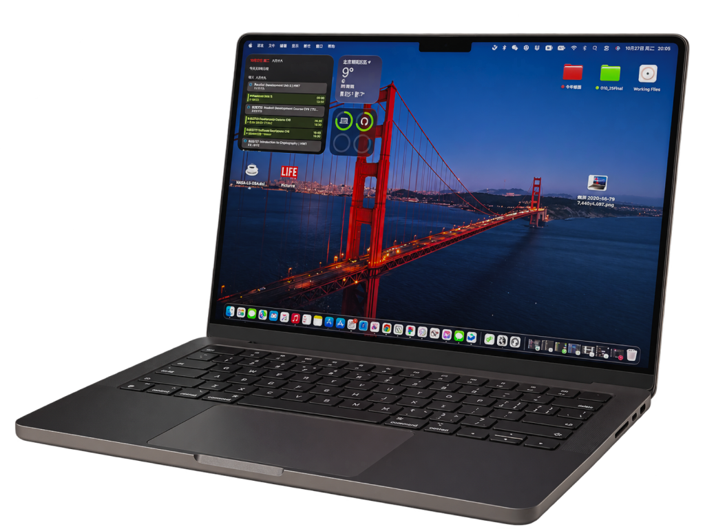

第一次创造
去探月之前，原来的电脑已经不够用，难以完成学校里的各项事务。我向父亲要了这台苹果电脑。
一位很擅长这方面的学长，教我购买 API、订阅 AI 工具，也带我学会用 AI 做网页。
第一次尝试 vibe coding，我用 DeepSeek 的 API 做了一个小游戏。这件事颠覆了我当时的认知，也让我开始了解互联网和 AI。
从使用电脑，到尝试创造自己的东西。


去探月之前，原来的电脑已经不够用，难以完成学校里的各项事务。我向父亲要了这台苹果电脑。
一位很擅长这方面的学长，教我购买 API、订阅 AI 工具，也带我学会用 AI 做网页。
第一次尝试 vibe coding，我用 DeepSeek 的 API 做了一个小游戏。这件事颠覆了我当时的认知，也让我开始了解互联网和 AI。
从使用电脑，到尝试创造自己的东西。